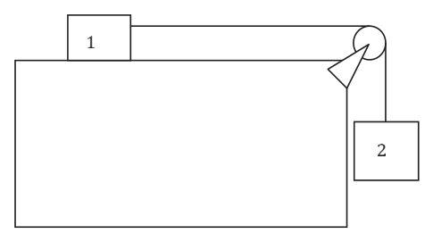
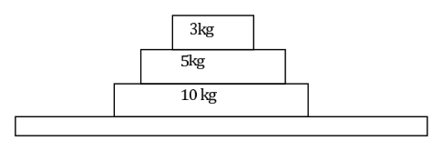
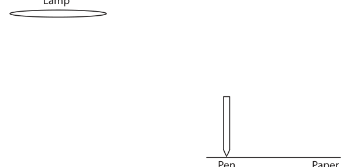
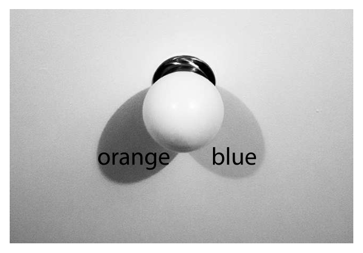

Question 1 When an incandescent light bulb has a current passing through its filament the filament heats and its resistance increases. If the light bulb is connected to a constant voltage source: a. the resistance increases at a roughly constant rate and the current through the light bulb decreases correspondingly. b. the resistance increases at a roughly constant rate and the current through the light bulb increases correspondingly. c. the resistance increases but the current remains the same. d. the resistance increases at a decreasing rate and the current increases at a decreasing rate until they are both roughly constant. e. the resistance increases at a decreasing rate and the current decreases at a decreasing rate until they are both roughly constant.
Topic: Circuits, Thermodynamics Metodi: Physical Modeling, Free-Body Diagram Competenze: Physical Reasoning Objects: Resistor, Battery Fonte: Testo (PDF) — p.2
Domanda 1 Quando una lampadina incandescente ha una corrente che passa attraverso il filamento il filamento si riscaldano e il suo
- la resistenza aumenta. Se la lampadina è collegata a una fonte di tensione costante: a. la resistenza aumenta a un ritmo approssimativamente costante e la corrente attraverso la lampadina diminuisce in modo corrispondente. b. la resistenza aumenta a un ritmo approssimativamente costante e la corrente attraverso la lampadina aumenta in modo corrispondente. c. la resistenza aumenta ma la corrente rimane la stessa. d. la resistenza aumenta a un ritmo decrescente e la corrente aumenta a un ritmo decrescente fino a quando non sono entrambi praticamente costanti. e. la resistenza aumenta a un ritmo decrescente e la corrente diminuisce a un ritmo decrescente fino a quando sono entrambi praticamente costanti.
Topic: Circuits, Thermodynamics Metodi: Physical Modeling, Free-Body Diagram Competenze: Physical Reasoning Objects: Resistor, Battery Fonte: Testo (PDF) — p.2
Question 2 Which of the following is the best estimate of the speed of a parrot flying?
- A.
- B.
- C.
- D.
- E.
Topic: Order-of-Magnitude Estimation Metodi: Order-of-Magnitude Estimation Competenze: Estimation & Approximation Objects: — Fonte: Testo (PDF) — p.2
Domanda 2 Quale delle seguenti è la migliore stima della velocità di un pappagallo che vola?
- A.
- B.
- C.
- D.
- E.
Topic: Order-of-Magnitude Estimation Metodi: Order-of-Magnitude Estimation Competenze: Estimation & Approximation Objects: — Fonte: Testo (PDF) — p.2
Question 3 When a screw is very tight the most effective way to loosen it is by:
- A. using a screwdriver with a fat handle and pushing down hard while turning to increase the grip.
- B. using a screwdriver with a fat handle and not pushing down too hard in case you deform the screw head. c. using a long screwdriver so that you are applying the force a long way from the point of contact. d. using a short screwdriver with a thin handle so that you are applying the force as close as possible to the point of contact. e. None of the above. A spanner is a more appropriate tool.
Topic: Newtonian Mechanics, Rigid Body Statics Metodi: Torque & Angular Momentum Analysis, Physical Modeling Competenze: Physical Reasoning Objects: Lever Fonte: Testo (PDF) — p.2
Domanda 3 Quando una vite è molto stretta il modo più efficace per allentare è:
- A. con una cacciavite con maniglia grassa e spingendo con forza mentre si gira per aumentare l’attaccamento.
- B. utilizzando uno screw-driver con maniglia grassa e non spingendo troppo in basso nel caso in cui si deformi la vite
- La testa. c. utilizzare un cacciavite lungo in modo che si applichi la forza a lungo dal punto di contatto. d. utilizzando un cacciavite corto con una maniglia sottile in modo da applicare la forza il più vicino possibile al punto di contatto. e. Niente di quanto sopra. Un spanner è uno strumento più appropriato.
Topic: Newtonian Mechanics, Rigid Body Statics Metodi: Torque & Angular Momentum Analysis, Physical Modeling Competenze: Physical Reasoning Objects: Lever Fonte: Testo (PDF) — p.2
Question 4 Kate has a bucket of ice cream and wants to take it on a long car trip into the desert, so she wraps it in a jumper. Is this a good idea? Choose the best answer.
- A. No. The jumper will make the ice cream hotter.
- B. Yes. The jumper will hold the cold in the ice cream.
- C. No. The jumper always moves the cold to outside it.
- D. Yes. The jumper will prevent the heat getting to the ice cream.
- E. No. The jumper won’t make any difference to what happens to the ice cream.
Topic: Thermodynamics Metodi: First Law of Thermodynamics, Physical Modeling Competenze: Physical Reasoning Objects: — Fonte: Testo (PDF) — p.3
Domanda 4 Kate ha un secchio di gelato e vuole portarlo in un lungo viaggio in auto nel deserto, quindi lo avvolge in un Salta. - E’ una buona idea? Scegli la risposta migliore.
- A. No. Il saltatore farà il gelato più caldo.
- B. Sì. Il saltatore tratterà il freddo nel gelato.
- C. No. Il saltatore sposta sempre il freddo fuori di esso.
- D. Sì. Il saltatore impedirà che il calore raggiunga il gelato.
- E. No. Il saltatore non farà differenza a cosa succede al gelato.
Topic: Thermodynamics Metodi: First Law of Thermodynamics, Physical Modeling Competenze: Physical Reasoning Objects: — Fonte: Testo (PDF) — p.3
Question 5 Which of the following is the best estimate of the mass of a 3D model aeroplane which is 20cm long and made of formed sheet aluminium?
- A. 0.5 g
- B. 5 g
- C. 50 g
- D. 500 g
- E. 5 kg
Topic: Order-of-Magnitude Estimation Metodi: Order-of-Magnitude Estimation, Dimensional Analysis Competenze: Estimation & Approximation Objects: — Fonte: Testo (PDF) — p.3
Domanda 5 Qual è la migliore stima della massa di un aereo modello 3D lungo 20 cm e di alluminio a fogli formati?
- A. 0.5 g
- B. 5 g
- C. 50 g
- D. 500 g
- E. 5 kg
Topic: Order-of-Magnitude Estimation Metodi: Order-of-Magnitude Estimation, Dimensional Analysis Competenze: Estimation & Approximation Objects: — Fonte: Testo (PDF) — p.3
Question 6 Two blocks are connected as shown. Block 1 has mass 5 kg and is on a frictionless, horizontal surface. Block 2 has mass 8 kg and is attached to block 1 by a rope with negligible mass, passing over a frictionless pulley. What is the acceleration of block 2?
- A. 15.9
- B. 9.8
- C. 6.0
- D. 3.8
- E. 0

blocchi collegati da corda su carrucolaTopic: Newtonian Mechanics Metodi: Free-Body Diagram, Kinematic Equations Competenze: Diagrammatic Reasoning, Mathematical Modeling Objects: Block, String, Pulley Fonte: Testo (PDF) — p.3
Domanda 6 Due blocchi sono collegati come mostrato. Il blocco 1 ha una massa di 5 kg e si trova su una superficie orizzontale senza attrito. Blocco 2 ha una massa di 8 kg ed è attaccato al blocco 1 da una corda di massa trascurabile, che passa su un polla senza attrito. Qual è l’accelerazione del blocco 2?
- A. 15.9
- B. 9.8
- C. 6.0
- D. 3.8
- E. 0
Blocchi collegati da corda su carrucola
Topic: Newtonian Mechanics Metodi: Free-Body Diagram, Kinematic Equations Competenze: Diagrammatic Reasoning, Mathematical Modeling Objects: Block, String, Pulley Fonte: Testo (PDF) — p.3
Question 7 A shark, with a sucker-fish attached, is swimming at constant speed looking for prey. Under these conditions:
- A. there is zero nett force on both the shark and the sucker-fish.
- B. the nett force on the shark is greater than the nett force on the sucker-fish because the shark has a larger mass. c. the swimming shark experiences a nett force but the sucker-fish does not because it is holding on. d. the nett force on the shark is always the same as that on the sucker-fish because they always have the same speed. e. the drag from the sucker-fish on the shark means that the nett force on the shark is less than on the sucker-fish.
Topic: Newtonian Mechanics Metodi: Free-Body Diagram, Physical Modeling Competenze: Physical Reasoning Objects: — Fonte: Testo (PDF) — p.4
Domanda 7 Uno squalo, con un pesce aspiratore attaccato, sta nuotando a velocità costante alla ricerca di preda. Sotto questi condizioni:
- A. non si verifica alcuna forza di rete sia sul squalo che sul pesce aspiratore.
- B. la forza della rete sul squalo è superiore alla forza della rete sul pesce aspiratore perché il squalo ha un una massa maggiore. c. lo squalo nuotante sperimenta una forza di rete ma il pesce-succiatore non lo fa perché si tiene. d. La forza della rete sugli squali è sempre la stessa di quella dei pesci-succiatori perché hanno sempre la stessa velocità. e. la resistenza del pesce aspiratore sul requino significa che la forza della rete sul requino è inferiore a quella del pesce aspiratore sul requino Pesce-sussurfante.
Topic: Newtonian Mechanics Metodi: Free-Body Diagram, Physical Modeling Competenze: Physical Reasoning Objects: — Fonte: Testo (PDF) — p.4
Question 8 The shark, with a sucker-fish still attached, spots a possible meal and accelerates suddenly towards it. Under these conditions:
- A. there is zero nett force on both the shark and the sucker-fish.
- B. the nett force on the shark is greater than the nett force on the sucker-fish because the shark has a larger mass. c. the swimming shark experiences a nett force but the sucker-fish does not because it is holding on. d. the nett force on the shark is always the same as that on the sucker-fish because they always have the same speed. e. the drag from the sucker-fish on the shark means that the nett force on the shark is less than on the sucker-fish. The blocks shown in the figure below are on a table. What is the nett force acting on the 5 kg block when the stack is:
Topic: Newtonian Mechanics Metodi: Free-Body Diagram, Physical Modeling Competenze: Physical Reasoning Objects: Block Fonte: Testo (PDF) — p.4
Domanda 8 Lo squalo, con un pesce aspiratore ancora attaccato, vede un possibile pasto e accelera improvvisamente verso di esso. In queste condizioni:
- A. non si verifica alcuna forza di rete sia sul squalo che sul pesce aspiratore.
- B. la forza della rete sul squalo è superiore alla forza della rete sul pesce aspiratore perché il squalo ha un una massa maggiore. c. lo squalo nuotante sperimenta una forza di rete ma il pesce-succiatore non lo fa perché si tiene. d. La forza della rete sugli squali è sempre la stessa di quella dei pesci-succiatori perché hanno sempre la stessa velocità. e. la resistenza del pesce aspiratore sul requino significa che la forza della rete sul requino è inferiore a quella del pesce aspiratore sul requino Pesce-sussurfante. I blocchi mostrati nella figura seguente sono su una tabella. Qual è la forza della rete che agisce sul blocco di 5 kg quando il pile è:
Topic: Newtonian Mechanics Metodi: Free-Body Diagram, Physical Modeling Competenze: Physical Reasoning Objects: Block Fonte: Testo (PDF) — p.4
Question 9 at rest?
- A. 29.4 N downwards
- B. 49 N downwards
- C. 78.4 N downwards
- D. 0 N
- E. 19.6 N upwards

tre blocchi impilati su pianoTopic: Newtonian Mechanics Metodi: Free-Body Diagram, Physical Modeling Competenze: Physical Reasoning Objects: Block Fonte: Testo (PDF) — p.4
Domanda 9
- In riposo?
- A. 29,4 N verso il basso
- B. 49 N verso il basso
- C. 78,4 N verso il basso
- D. 0 N
- E. 19,6 N in su
*tre blocchi impilati su pianoforte *
Topic: Newtonian Mechanics Metodi: Free-Body Diagram, Physical Modeling Competenze: Physical Reasoning Objects: Block Fonte: Testo (PDF) — p.4
Question 10 being pushed to the right with constant velocity?
- A. 29.4 N downwards
- B. 49 N downwards
- C. 78.4 N downwards
- D. 0 N
- E. 49 N to the right SECTION B: WRITTEN ANSWER QUESTIONS USE THE ANSWER BOOKLET PROVIDED Note: Suggested times are given for section B as a general guide only. You may take more or less time on any question – everyone is different.
Topic: Newtonian Mechanics Metodi: Free-Body Diagram, Physical Modeling Competenze: Physical Reasoning Objects: Block Fonte: Testo (PDF) — p.4
Domanda 10
- E’ stato spinto a destra con una velocità costante?
- A. 29,4 N verso il basso
- B. 49 N verso il basso
- C. 78,4 N verso il basso
- D. 0 N
- E. 49 N a destra PARTE B: Risposte scritte Utilizzate il volantino di risposta fornito Nota: I tempi suggeriti sono forniti per la sezione B solo come guida generale. Potresti prendere più o meno tempo per Domanda: tutti sono diversi.
Topic: Newtonian Mechanics Metodi: Free-Body Diagram, Physical Modeling Competenze: Physical Reasoning Objects: Block Fonte: Testo (PDF) — p.4
Question 11 Suggested Time: 20 min This question explores the characteristics of shadows formed by a variety of light sources. Throughout this question you will be asked to draw diagrams as part of your answer. Where instructed please use the boxes on pages 2–3 of the answer booklet to draw these diagrams. Label all diagrams. a) Point light sources emit light in all directions from a single point. They have no measurable size. (i) In the answer box on page 2 of the answer booklet, an object is drawn in front of a point light source. In this box draw a diagram of how the shadow forms, and what the shadow looks like on the screen. (ii) If the object were at a distance from the light source of 1/3 the distance from the light source to the screen, how large would the shadow be compared to the object? Explain your answer using diagrams drawn in the box on page 2 of the answer booklet. Put any words needed in or near this box. b) All real light sources, including the Sun and artificial sources, are extended sources rather than point sources. For example, at sunrise and sunset is it possible to see that the Sun is an extended source of light, circular in shape. Light is emitted in all directions from each part of an extended source. (i) Draw a diagram of how the shadows form and what the shadows of the object look like on the screen in front of an extended light source for the two set ups drawn in the answer box on page 2 of the answer booklet. (ii) Explain why shadows can be fuzzy-looking in the box on page 2 of the answer booklet. (iii) Given the setup below, draw the shadow of the pen on the diagram in the box on page 3 of the answer booklet. Lamp Pen Paper c) Compact fluorescent light bulbs come in a range of slightly different colours. Some are described as ‘cool’ white and emit light which is more blue in colour, while others, described as ‘warm’ white, emit light of a more orange colour. A room is lit by one or more lamps fitted with compact fluorescent bulbs. A shadow pattern forms on the ceiling near a ceiling lamp which is not turned on, as shown in the diagram below. (i) Mark on the floor plan on page 3 of the answer booklet the positions of any operating lamps and the colours of their bulbs. (ii) In the box on page 3 of the answer booklet, draw a diagram showing how the ceiling would appear from the door of the room. Indicate the colours of all regions of shadow. d) A sheet of black cardboard with a very small round hole in its centre is held 10 cm above a white paved area outside at noon under a clear sky, and the image below is observed. (i) Draw diagrams to explain how this image is formed in the box on page 3 of the answer booklet. (ii) Would you expect to see the same thing on most other clear days? Explain why or why not in the box on page 3 of the answer booklet.

setup lampada penna carta per ombre
ombre colorate arancio e blu su soffittoimmagine foro stenopeico sole parziale
Topic: Geometric Optics Metodi: Ray Tracing, Physical Modeling Competenze: Diagrammatic Reasoning, Physical Reasoning Objects: Screen Fonte: Testo (PDF) — p.5
Domanda 11 Tempo di programmazione: 20 minuti Questa domanda esplora le caratteristiche delle ombre formate da varie fonti di luce. Durante tutta questa domanda vi verrà chiesto di disegnare diagrammi come parte della vostra risposta. Se è stato indicato Per disegnare questi diagrammi, si prega di utilizzare le caselle di cui alle pagine 23 del foglio di risposte. Etichettate tutti i diagrammi. a) Le fonti di luce puntaria emettono luce in tutte le direzioni da un unico punto. Non hanno dimensioni misurabili. (i) Nella casella di risposta della pagina 2 del libretto di risposta, un oggetto è disegnato davanti a un punto fonte di luce. In questa scatola disegni un diagramma di come si forma l’ombra, e che cosa l’ombra Sembra sullo schermo. (ii) Se l’oggetto si trova ad una distanza dalla fonte di luce di 1/3 della distanza dalla luce
- E’ una fonte per lo schermo, quanto grande sarebbe l’ombra rispetto all’oggetto? Spiegate il vostro risponde utilizzando i diagrammi disegnati nella casella di pagina 2 del volantino delle risposte. - Metti le parole. necessaria in o vicino a questa scatola. b) Tutte le vere fonti di luce, comprese quelle del Sole e artificiali, sono fonti estese piuttosto che fonti di luce fonti di riferimento. Ad esempio, all’alba e al tramonto è possibile vedere che il Sole è un esteso fonte di luce, in forma circolare. La luce viene emessa in tutte le direzioni da ogni parte di un’estensione
- fonte. (i) Disegnare un diagramma di come si formano le ombre e di come le ombre dell’oggetto sembrano lo schermo davanti a una fonte luminosa estesa per le due configurazioni disegnate nella casella di risposta La pagina 2 del libretto di risposta. (ii) Spiegate perché le ombre possono essere confuse nella scatola a pagina 2 del opuscolo.
- In base alla configurazione di seguito, disegnare l’ombra della penna sul diagramma della casella di pagina 3 del il libretto di risposte. Lampada Penna Carta c) Le lampadine fluorescenti compatte sono di un’ampiezza di colori leggermente diverse. Alcuni sono descritti come cool bianco e emettono luce che è più blu di colore, mentre altri, descritti come warm bianca, emette luce di colore più arancione. Una stanza è illuminata da una o più lampade dotate di lampadine fluorescenti compatte. Un modello di ombra si forma sul soffitto vicino a una lampada di soffitto non accesa, come mostrato nel diagramma di seguito.
- Marcare sulla tabella di fondo a pagina 3 del libretto di risposte le posizioni delle lampade di funzionamento e i colori delle loro lampadine. (ii) Nella casella di pagina 3 del libro di risposta, disegnare un diagramma che mostra come il soffitto sarebbe Appare dalla porta della stanza. Indicare i colori di tutte le regioni di ombra. d) Un foglio di cartone nero con un buco rotondo molto piccolo al centro è tenuto 10 cm sopra un bianco Il campo di lavoro è un’area pavimentata all’esterno a mezzogiorno sotto un cielo chiaro, e l’immagine di seguito è osservata. (i) Disegna schemi per spiegare come si forma questa immagine nella casella della pagina 3 della risposta
- Il libretto. (ii) Ci aspetteresti di vedere la stessa cosa nella maggior parte degli altri giorni di chiaro? Spiegate il motivo e il motivo nella casella della pagina 3 del volantino delle risposte.
setup lampada penna carta per ombre
- colore ombroso arancio e blu su soffitto*
immagine foro stenopeico sole parziale
Topic: Geometric Optics Metodi: Ray Tracing, Physical Modeling Competenze: Diagrammatic Reasoning, Physical Reasoning Objects: Screen Fonte: Testo (PDF) — p.5
Question 12 Suggested Time: 20 min Some elements have radioactive isotopes (radioisotopes) which can be used for medical imaging. A radioisotope is injected into the bloodstream, whence it is taken up by organs in the body. Areas of extremely high cell growth or repair such as tumours take up and retain this isotope much more efficiently than any other tissue. Thus imaging using radioisotopes can be used to indicate malignant tissue growth. Technetium-99m (Tc) is one such radioisotope, which is used for imaging organs such as the thyroid, liver, kidneys, and brain. The half-life, the interval during which the number of atoms left of a radioisotope halves, of Tc is hours. Rates of radioactivity can be measured in Curies (Ci), equivalent to decays per second. For any radioisotope, the number of atoms, half-life and radioactivity are related by the formula In this question, we examine a model of the process of Tc uptake in a patient’s cancerous thyroid glands. The patient is an otherwise healthy adult. In this model, mCi of Tc is injected into a vein in the patient’s arm of radius mm, enters the bloodstream, then enters each thyroid gland through an artery in the patient’s neck of radius mm. Let the velocities of blood flow in the patient’s arm and neck be mm/s and cm/s. Let the total blood volume of the patient be L m, and let each thyroid gland (there are two) have volume mL. The Tc emits gamma rays of energy J . Give your answers both as formulae and numerically where applicable. a) What is the concentration (in number of atoms per litre) of Tc in the bloodstream after the injection? b) Qualitatively, sketch the amount of Tc in the thyroid as a function of time, starting from the time of injection. c) The continuity equation in fluid mechanics states that the volume flow rate of fluid flowing through a pipe is constant. Consider the blood flow in the arm and neck of the patient - does the continuity equation hold in this model? Justify your answer with calculations, and use your knowledge of the body to explain why you would expect this result. d) What is the initial rate of energy release due to gamma radiation emitted from a thyroid gland? In this and subsequent parts you may neglect the time taken for the thyroid glands to saturate with Tc. e) A scan is taken over minutes. If the total energy detected by the scanner exceeds J, an image appears due to radioactivity in a thyroid gland. Approximately how much time will elapse before radioactivity is no longer detected in a scan?
Topic: Nuclear & Particle Physics, Fluid Mechanics Metodi: Radioactive Decay Law, Continuity Equation, Calculus-Integration Competenze: Mathematical Modeling, Physical Reasoning, Estimation & Approximation Objects: Nucleus, Photon, Tube Fonte: Testo (PDF) — p.7
Domanda 12 Tempo di programmazione: 20 minuti Alcuni elementi hanno isotopi radioattivi (radioisotopi) che possono essere utilizzati per l’imaging medico. A il radioisotopo viene iniettato nel sangue, da dove viene assorbito dagli organi del corpo. Altre aree di la crescita cellulare o la riparazione estremamente elevata, come i tumori assorbono e conservano questo isotopo molto più più efficientemente di qualsiasi altro tessuto. Pertanto, l’imaging con radioisotopi può essere utilizzato per indicare il malinquente. crescita dei tessuti. Il tecneto-99m (Tc) è uno di tali radioisotopi, utilizzato per l’imaging di organi come come la tiroide, il fegato, i reni e il cervello. La semivita’, l’intervallo durante il quale il numero di atomi è uscito di una metà radioisotopa, di Tc è ore. I tassi di radioattività possono essere misurati in Curies (Ci), equivalenti a decadi al secondo. Per Qualsiasi radioisotopo, numero di atomi, durata di emivita e radioattività sono correlati dalla formula In this question, we examine a model of the process of Tc uptake in a patient’s cancerous thyroid
- Le ghiandole. Il paziente è un adulto sano. In questo modello, mCi di Tc viene iniettato in un Vena del braccio del paziente di raggio mm, entra nel sangue, poi entra in ciascuna ghiandola tiroidea attraverso un’arteria nel collo del paziente di raggio mm. Le velocità di flusso sanguigno nel braccio e nel collo del paziente devono essere mm/s e cm/s. Lascia che il volume sanguigno totale del paziente è L m, e lasciare che ogni ghiandola tiroidea (ci sono due) hanno un volume ml. Il Tc emette raggi gamma di energia J. Date le vostre risposte sia in forma di formule che numericamente, se del caso. a) Qual è la concentrazione (in numero di atomi per litro) di Tc nel flusso sanguigno dopo il trattamento di iniezione? b) Sottolineare qualitativamente la quantità di Tc nella tiroide in funzione del tempo, a partire dal tempo di iniezione. c) L’equazione di continuità nella meccanica dei fluidi afferma che il volume di flusso del fluido che scorre attraverso una tubazione è costante. Considerate il flusso sanguigno nel braccio e nel collo del paziente - l’equazione di continuità si mantiene in questo modello? Giustificare la risposta con calcoli, e utilizzare il vostro conoscenza del corpo per spiegare perché si dovrebbe aspettarsi questo risultato. d) Qual è il tasso iniziale di rilascio di energia dovuto alle radiazioni gamma emesse da una ghiandola tiroidea? In in questa e nelle parti successive si può trascurare il tempo necessario per saturare le ghiandole tiroidei Tc. e) Una scansione è effettuata in minuti. Se l’energia totale rilevata dallo scanner supera J, appare un’immagine a causa della radioattività in una ghiandola tiroidea. Approximativamente come Quanto tempo ci vorrà prima che la radioattività non venga rilevata in una scansione?
Topic: Nuclear & Particle Physics, Fluid Mechanics Metodi: Radioactive Decay Law, Continuity Equation, Calculus-Integration Competenze: Mathematical Modeling, Physical Reasoning, Estimation & Approximation Objects: Nucleus, Photon, Tube Fonte: Testo (PDF) — p.7
Question 13 Suggested Time: 20 min After some time spent pondering the workings of the universe, John says to Mary, “Energy is always conserved.” Mary, however, doesn’t agree. She says to John that if two identical cars travelling at the same speed collide head-on, there is kinetic energy before the collision, but no kinetic energy after. The two continue their disputation over a cup of tea, and await your assistance at the end of this question. The momentum of an object of mass moving with velocity is The (vector) sum of the momenta of all of the objects in any collision is the same before and after the collision. In this question, a positive velocity indicates motion to the right. a) Two hard particles and collide head-on. They have initial velocities and respectively (so is negative). If the collision is elastic, the kinetic energy is conserved, and the velocities of the particles after colliding are (i) What do these equations become for ? Give an example of such a collision. (ii) Approximate these equations for . Give an example of such a collision. b) Find the fraction of the kinetic energy which is lost if two gunky blobs of masses kg and kg with velocities m and m , collide head-on and the final velocity of the gunky blob with mass is m . c) In the case where the collision is completely inelastic, the gunky blobs stick together to form a superblob of total mass . If kg, kg, m and m , determine the fraction of kinetic energy lost during the formation of the superblob. d) Is either John or Mary from above correct, and how can their statements be reconciled?
Topic: Conservation of Momentum, Conservation of Energy Metodi: Conservation of Momentum, Conservation of Energy, Impulse-Momentum Theorem Competenze: Mathematical Modeling, Physical Reasoning Objects: — Fonte: Testo (PDF) — p.8
Domanda 13 Tempo di programmazione: 20 minuti Dopo aver passato un po’ di tempo a riflettere sul funzionamento dell’universo, Giovanni dice a Maria: La Maria, tuttavia, non è d’accordo. Lei dice a John che se due auto identiche viaggiano al La stessa velocità colpisce di fronte, c’è energia cinetica prima della collisione, ma nessuna energia cinetica dopo. Il Due continuano la loro discussione per una tazza di tè, e aspettano il vostro aiuto alla fine di questa domanda. La velocità di un oggetto di massa in movimento con velocità è La somma (vettoriale) dei momenti di tutti gli oggetti in qualsiasi collisione è la stessa prima e dopo la collisione.
- Una collisione. In questa domanda, una velocità positiva indica il movimento a destra. a) Due particelle dure e si scontrano di fronte. Hanno rispettivamente velocità iniziali e (così è negativo). Se la collisione è elastica, l’energia cinetica è conservata e le velocità del le particelle dopo il collasso sono (i) Che cosa diventano queste equazioni per ? Cita un esempio di tale collisione. (ii) Approximare queste equazioni per . Cita un esempio di tale collisione. b) Trova la frazione di energia cinetica che viene persa se due macchie di massa kg e kg con velocità m e m , collidono a testa e a testa la velocità della macchia gunky con massa è m . c) Nel caso in cui la collisione sia completamente inelastica, le macchie di gomma si attaccano per formare un superbolla di massa totale . Se kg, kg, m e m , determinare la frazione di energia cinetica persa durante la formazione del Superboll. d) Sono corretti da sopra Giovanni o Maria, e come si possono conciliare le loro affermazioni?
Topic: Conservation of Momentum, Conservation of Energy Metodi: Conservation of Momentum, Conservation of Energy, Impulse-Momentum Theorem Competenze: Mathematical Modeling, Physical Reasoning Objects: — Fonte: Testo (PDF) — p.8
Question 14 Suggested Time: 40 min Friction is the force between surfaces that acts to prevent their relative motion. It acts along the plane of the surface. The part of the contact force which acts perpendicular to the plane of the surface is the normal force. Static friction, present when two bodies are at rest relative to each other, takes any value necessary to balance other forces up to a maximum given by where is the coefficient of static friction. Friction can be used to make eating pineapple an exciting experience. Consider a large cube of pineapple sitting on a chopping board. One end of the board is on the edge of the bench, and the other end is raised, so that the board is inclined at an angle to the bench.
- A. Draw a free body diagram showing the forces acting on the pineapple.
- B. The board is gradually tilted up until the cube of pineapple begins to slide inexorably toward the waiting mouth at bottom of ramp. Show that . Cubes of pineapple are, regrettably, perishable goods, and we apologise that we were unable to ship one to you for the purposes of this examination. Therefore, the next part of this question will use the (admittedly poor) substitutes of paper and pencil. When you draw on paper with a lead pencil, you coat the paper with a graphite mixture. c) The coefficients of static friction differ between different pairs of surfaces. Using the ideas presented above and the theory you have derived, devise and perform an experiment to find the difference between A) the coefficient of static friction between paper and paper and B) the coefficient of static friction between paper and graphite mixture. Equipment: You may tear out the next three leaves of this question book to use as equipment. Some suggested folds are marked to help you create some useful apparatus, but the choice of what to do with your paper is up to you. Along with the paper of these three pages, you may also use the lead pencil which you brought into this exam, and a ruler. Remember to be safe when using any equipment – make sure you don’t injure yourself or other people (or your pencil or ruler). What is required: Write out the method that you are going to use in detail and justify why you have chosen it, along with any modifications you make along the way. State your results, and any processing you do of them, and evaluate your answers. Important: the credit in this question is primarily for your method, how you would calculate the results, and your observations of what works and doesn’t as you try your experiment. The numeric answers are a small part, and you should not be concerned if you are unable to get them – we are interested in your thought processes, designs and observations. As a final note, although this be in lieu of a pineapple-based experiment, do not attempt to eat any of your equipment. This work of ours is done: there are no questions more. Your work has just begun: enjoy it, we implore! The remaining pages in this booklet are for use as equipment for Q14. A4 paper is 297 mm long by 210 mm wide. Integrity of Competition If there is evidence of collusion or other academic dishonesty, students will be disqualified. Markers’ decisions are final.
Topic: Newtonian Mechanics, Rigid Body Statics Metodi: Free-Body Diagram, Physical Modeling, Vector Decomposition Competenze: Experimental Data Analysis, Measurement & Instrumentation, Mathematical Modeling Objects: Block, Inclined Plane Fonte: Testo (PDF) — p.9
Domanda 14 Tempo di lavoro: 40 minuti La frizione è la forza tra le superfici che agisce per impedire il loro movimento relativo. Agisce lungo il piano di la superficie. La parte della forza di contatto che agisce perpendicolare al piano della superficie è la forza normale. La frizione statica, presente quando due corpi sono a riposo l’uno rispetto all’altro, assume qualsiasi valore necessaria per bilanciare le altre forze fino a un massimo dato da in cui è il coefficiente di attrito statico. La frizione può essere utilizzata per rendere il mangiare l’ananas un’esperienza eccitante. Considerate un grande cubo di ananas seduto su una tavola di taglio. Un’estremità della lavagna è sul bordo della panchina, e l’altra è il tabellone è inclinato in un angolo verso la panchina.
- A. Disegnare un diagramma del corpo libero che mostra le forze che agiscono sull’ananas.
- B. La lavagna è gradualmente inclinata fino a quando il cubo di ananas inizia a scivolare inessorabilmente verso il bocca in attesa al fondo della rampa. Mostra che . I cubetti di ananas sono, purtroppo, beni perishabili, e ci scusiamo di non aver potuto spedire uno. ai fini di questo esame. La seconda parte della domanda si riferirà quindi alla (addirittura poveri) sostituti di carta e matita. Quando disegni su carta con una matita di piombo, ti rivesti la carta con miscela di grafite. c) I coefficienti di attrito statico differiscono tra le diverse coppie di superfici. Utilizzando le idee La teoria che avete derivato, ideare e eseguire un esperimento per trovare il La differenza tra A) il coefficiente di attrito statico tra carta e carta e B) il coefficiente di attrito statico tra carta e carta coefficiente di attrito statico tra miscela di carta e grafite. Equipaggiamento: Potete strappare le tre foglie successive di questo libro di domande per usarle come attrezzature. Alcuni le pieghe suggerite sono contrassegnate per aiutarti a creare qualche apparecchio utile, ma la scelta di cosa fare con Il tuo giornale dipende da te. Insieme al foglio di queste tre pagine, potete usare anche la matita di piombo che hai portato in questo esame, e un governante. Ricordate di essere sicuri quando utilizzate qualsiasi apparecchio make assicurarsi di non ferire se stesso o altre persone (o la matita o il tuo reggente). Cosa è necessario: Scrivi in dettaglio il metodo che vuoi usare e giustifica il motivo per cui hai l’ha scelto, insieme a tutte le modifiche che fai lungo il cammino. Indicare i risultati e qualsiasi trattamento ne fai una valutazione e valuta le tue risposte. Importante: il merito di questa domanda è principalmente per il tuo metodo, come calcolare i risultati, e le vostre osservazioni di cosa funziona e cosa non funziona mentre provate il vostro esperimento. Le risposte numeriche sono La nostra proposta di direttiva è stata approvata dal Consiglio nel corso del suo mandato. I processi di pensiero, i progetti e le osservazioni. Come nota finale, anche se questo è invece di un esperimento a base di ananas, non cercare di mangiare alcuna di
- Le tue attrezzature. Questo nostro lavoro è finito: non ci sono più domande. Il vostro lavoro è appena iniziato: godetevi, vi imploramo! Le pagine rimanenti del presente opuscolo sono destinate all’uso come attrezzature per il Q14. La carta A4 ha una lunghezza di 297 mm e una larghezza di 210 mm. Integrità della concorrenza Se ci sono prove di collusione o di altre disonestà accademiche, gli studenti saranno Disqualificato. Le decisioni sui marcatori sono definitive.
Topic: Newtonian Mechanics, Rigid Body Statics Metodi: Free-Body Diagram, Physical Modeling, Vector Decomposition Competenze: Experimental Data Analysis, Measurement & Instrumentation, Mathematical Modeling Objects: Block, Inclined Plane Fonte: Testo (PDF) — p.9